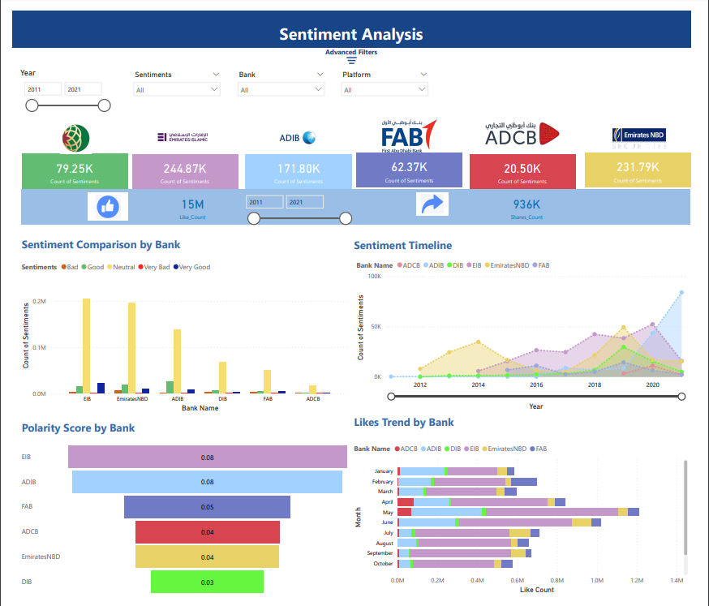

H I T H E R E !
Welcome to my digital realm where data transforms into actionable insights!
I am a avid data scientist who is specialized in designing and implementing data-driven solutions that catalyze breakthroughs across domains. My passion for ML/AI, backed by robust expertise in data analytics, data science, and data engineering, enables me to shape strategic decisions. As a dedicated data enthusiast, I excel in revealing narratives within complex datasets, transforming raw information into actionable insights.
Work Experience
Analytics Engineer
-
Data Warehouse Architecture Development: Responsible for designing data warehousing on BigQuery for machine learning and BI activities.
-
ETL Pipeline Management: Managing ETL/ELT pipelines using custom data extraction and transformation schemes, BigQuery, Stitch, AWS Glue and dbt to feed Looker visualization.
-
Analytics Team Support: Developing various workflows for ML, transformation and extraction models for the Analytics team.
-
ABC Classification Model: implemented ABC Classification model on product and SKU level on a monthly basis, resulting in improved inventory management and product selection accuracy for retailers.
-
AWS RDS - BigQuery Migration: Deployed data migration models of AWS RDS to BigQuery using CI/CD principles, enabling Analytics team to generate real-time dashboards in Looker, resulting in increase in accuracy of sales and inventory metrics.
-
Continuous Deployment on AWS Lambda: Synergized with DevOps in continous deployment of models and cron jobs on AWS Lambda.

Data Scientist
-
Analytics Platform Development: Developed a banking analytics platform by optimizing social media sentiment analysis accuracy, RFM analysis and product recommendation by 15%.
-
BI Dashboard Deployment: Launched meaningful dashboards and detected financial and operational inefficiencies including throughput volume and revenue tracking dashboard of a renowned UAE firm.
-
RNN LSTM Model Prediction: Optimized marketing strategies by leveraging an RNN LSTM Prediction Model to accurately forecast monthly leads, cost, and conversion rate.
-
Sentiment Analysis Model: Optimized the sentiment analysis on customer reviews and web scraping which calculated the polarity scores, sentiment ratio, likes and share trend by analyzing 10000 reviews from Twitter and Facebook.
-
Automation Models: Automated data collection via web scraping (using Selenium & BeautifulSoup) to ingest data for various ML-Business problems and amplify insights on Power BI.
Areas of Expertise
Data Engineering and Automation
-
ETL Pipeline Development: Designing and implementing ETL pipelines using Python and utilizing GCP and AWS Glue
-
API Integrations: Integrated various APIs to facilitate data exchange and automation.
-
Web Scraping and Data Extraction: Developed Selenium and BeautifulSoup web scrapers and data extraction workflows for diverse datasets, particularly in the context of real-estate products.
-
Data Warehousing: Leveraged Google BigQuery and AWS RDS for data warehousing, enabling efficient storage and retrieval of data.
-
ETL Architecture Design: Crafting efficient ETL architectures and have promoted collaboration between data and business teams to ensure effective data processing.
-
SQL and NoSQL Database Extraction: Created ETL pipelines to extract data from BigQuery, AWS RDS and MongoDB databases, showcasing versatility in data retrieval.
-
Machine Learning Model Automation: Automated the deployment of machine learning models using DevOps practices, ensuring seamless integration into production environments.
-
Continuous Deployment and Maintenance: Implemented continuous deployment strategies for Python models on AWS Lambda, ensuring ongoing model performance.
-
Cloud Functions for Automation: Developed Cloud Functions to automate various processes, including data extraction and transformation flows, simplifying and streamlining tasks.

Data Science and Deep Learning
-
Predictive Modeling: Proficiency in building predictive models, including both traditional statistical models and deep learning models.
-
Sentiment Analysis and Classification: Expertise in analyzing and classifying text data for sentiment and other categorical attributes.
-
ABC Classification: Developed ABC classification models on products and categories for inventory stocks.
-
Supervised and Unsupervised Learning: Experience with both supervised and unsupervised learning algorithms, enabling you to work with labeled and unlabeled data effectively.
-
Anomaly Detection: Capability to identify anomalies or outliers in datasets, crucial for quality control and fraud detection.
-
Product Recommendation Systems: Proficient in developing recommendation systems, which are essential for improving user experiences in various applications.
-
Forecasting Models: Developing forecasting models, including ARIMA and its variations, for time-series data analysis and prediction.
Data Analytics and Visualization
-
Data Visualization: Proficient in using BI tools like Power BI and Python libraries for visualizing datasets. Skilled in generating insights from visualizations to aid in decision-making.
-
BI Dashboards and Reporting: Utilized Power BI to create interactive dashboards and insightful reports.Transformed complex data into user-friendly visualizations for stakeholders to make informed decisions quickly.
-
Data Analysis using SQL: Proficiency in SQL for data analysis and data extraction through query writing.
-
Data Wrangling and Transformation: Expertise in data cleaning using various techniques.Utilized tools like dbt and other methods for data transformation.
-
Problem Breakdown and Solving: Demonstrated the ability to break down complex problems and find effective solutions, a critical skill in data analysis and problem-solving.
Data Science and Engineering Projects

Real Estate Leads and Conversions Forecasting Model
The Real Estate Leads and Conversions Forecasting Model is a comprehensive data-driven solution designed to help a real estate company predict the number of leads and conversions it can expect to achieve in the future. This project employs a variety of forecasting algorithms, including RNN LSTM, Holt-Winters, ARIMA, Linear Regression, and Random Forests, to provide accurate and actionable insights for the company's sales and marketing strategies.
ABC Classification
ABC classification is a popular inventory management and categorization technique used in supply chain management, logistics, and inventory control. It categorizes items or products into three main groups based on their relative importance and value to the organization. Each group is assigned a letter (A, B, or C) to represent its priority or significance.
Social Media NLP and Sentiment Analysis
The Sentiment Analyzer is a data-driven project designed to analyze and understand sentiment within textual data, such as customer reviews, social media posts, or any text-based content. Sentiment analysis, also known as opinion mining, is a critical tool for businesses and organizations to gain insights into public opinion, customer satisfaction, and market trends.

Product Recommendation Engine
The Recommendation Engine with Frequently Bought Together and Item-Based Collaborative Filtering is a data-driven system designed to enhance user experiences on e-commerce platforms by providing personalized product recommendations. This project incorporates two distinct recommendation algorithms: Frequently Bought Together (FBT) and Item-Based Collaborative Filtering (IBCF). These algorithms analyze user behavior and product attributes to generate relevant product recommendations.

Data Migration from AWS RDS / MongoDB to BigQuery
This project involves migrating data from an Amazon Web Services Relational Database Service (AWS RDS) to Google BigQuery. AWS RDS is a managed relational database service, and Google BigQuery is a fully managed, serverless, and highly scalable data warehouse. The goal of this project is to transfer data from one platform to another seamlessly, ensuring data integrity, reliability, and efficient query performance. It focuses on migrating data from a MongoDB NoSQL database to Google BigQuery, a fully managed data warehouse and analytics platform. MongoDB is known for its flexibility and scalability, while BigQuery excels in performing complex analytical queries on structured data.
And many more exciting projects...
"GeoPointFinder" is a Python-based application that leverages geocoordinates and the Places API to effortlessly discover and compile a list of points of interest within a defined radius. Web scraping is the process of extracting data from websites, and it has become an invaluable tool for various industries and applications, including market research, competitive analysis, data analysis, and more. This project aims to create an automated web scraping system using Beautiful Soup and Selenium, two powerful Python libraries, to efficiently collect data from target websites. The Discrepancy Detector is a data validation and comparison tool designed to ensure the consistency and accuracy of data between two different data sources: Amazon Web Services Relational Database Service (AWS RDS) and Google BigQuery. This project serves as a crucial quality assurance component in data pipelines, helping organizations maintain data integrity and identify potential issues in their data ingestion and transformation processes.
Notable BI Projects

Gulf Bank Deck Analytics
The Gulf Bank Deck Analytics project is a comprehensive Power BI solution aimed at providing valuable insights into Gulf Bank's financial performance, customer sentiments, and regional banking trends. This multifaceted tool empowers Gulf Bank decision-makers with data-driven intelligence, allowing them to optimize strategies, improve customer engagement, and gain a competitive edge in the banking industry. Sentiment Analysis: Utilizing advanced natural language processing (NLP) techniques, the Gulf Bank Deck Analytics project examines customer sentiments extracted from various data sources, including social media, customer feedback, and surveys.
Volume Revenue Throughput Tracking Analysis
Volume Revenue Throughput Tracking Analysis (VRTTA) project is a dynamic and insightful Power BI dashboard designed to empower businesses to gain a deep understanding of their sales and operational performance. VRTTA provides a comprehensive view of critical business metrics related to volume, revenue, and throughput, enabling data-driven decision-making and actionable insights.
Complaint Workload Analysis
The Complaint Workload Analysis in Power BI is a robust data analytics solution meticulously designed to provide organizations with unparalleled insights into their customer service operations, complaint management, and workload distribution. This dynamic dashboard empowers companies to proactively address customer concerns, streamline internal processes, and enhance overall customer satisfaction.
DataInsight360
DataInsight360 is a comprehensive Power BI dashboard designed to provide a 360-degree view of an insurance company's operations and performance. This powerful analytical tool brings together various elements and analytics to help insurance professionals make data-driven decisions, enhance customer experiences, optimize business processes, and improve overall efficiency.
Performance360 Dashboard
Performance360 is a dynamic Power BI dashboard tailored to provide a comprehensive overview of a company's performance, with a primary focus on sales and financial metrics. This robust analytics tool serves as a strategic resource for decision-makers, enabling them to make informed choices, optimize strategies, and drive the company's growth.
SQL Analysis Projects

Retail Sales, Products, SKUs, Financials, Discrepancies, Commission Rate Analysis, Denormalization queries for ELT architecture and much more!
The Retail Sales Analysis project aims to provide valuable insights into the sales performance of a retail company operating in multiple regions. The company deals with a wide range of products, suppliers, and customers, and it relies on an extensive database to manage its sales data. The objective of this project is to analyze the available data using SQL and generate actionable insights to support data-driven decision-making within the organization. SQL queries and scripts for data extraction, transformation, and analysis. Data visualization dashboards and reports for key stakeholders. Recommendations and actionable insights based on the analysis.
Courses and Certifications

PL-300 Microsoft Power BI
This certification attests to my proficiency in Power BI, a powerful business intelligence tool. It signifies that I possess a strong grasp of data visualization, dashboard creation, and report generation. With this certification, I am equipped to transform raw data into informative visuals that aid in making strategic decisions.
AWS Certified Data Analytics Specialty 2023 (In Progress):
This certification demonstrates my commitment to mastering data analytics using Amazon Web Services (AWS) technologies. As a candidate currently progressing and studying Udemy courses, I am immersing myself in AWS's data analytics ecosystem, gaining expertise in data processing, visualization, and interpretation using cloud-based resources.
Get In Touch
I'm excited to connect and collaborate with fellow data enthusiasts, industry professionals, and potential partners. Whether you're interested in discussing a project, sharing insights, or exploring new opportunities, I'm just a message away. Feel free to reach out.